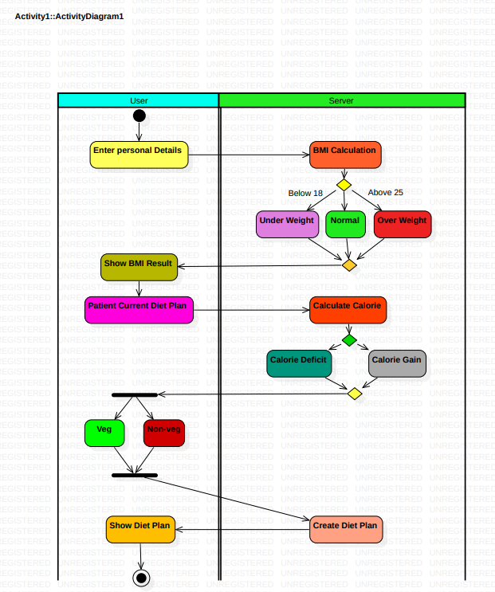

Activity Diagram
Activity/state diagram:A system's dynamic features and components are described using an activity/state
diagram.User portion and Server part are the two separate components in our diagram.First, we will enter
our personal information in the user section of the server, which will then calculate our BMI and
determine which weight category we fall under before showing the user the results.The server will
compute calories and make a decision based on the patient's existing diet plan before creating a diet
plan and displaying it to the user.It basically depicts the diagram's flow.